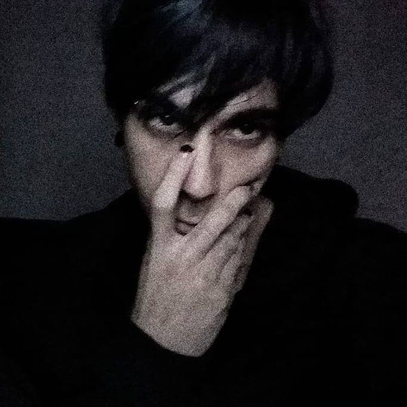

Programador e Gótico 🦇
23 anos(nascido em 1998). Sou caladão, mas quando começo a falar, não paro mais. Fico muito empolgado quando faço o que gosto, mas na maior parte do tempo eu fico com essa cara: '-'
- Rodrigo feliz: '-'
- Rodrigo triste: '-'
- Com raiva: '-'
- Contando piada: '-'
Por causa disso as pessoas costumam não conseguir identificar quanto estou falando sério e quando estou brincando. É muito engraçado ver a reação das pessoas quando eu faço uma piada e todos olham pra mim com cara de: O.O?